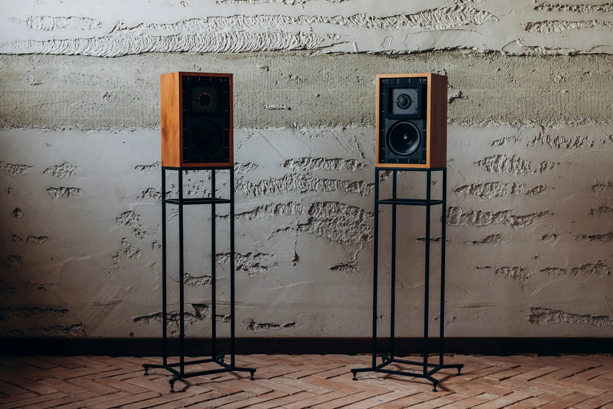

The BBC LS3/5A: a monitor made for outside-broadcast vans, and its 11-ohm Rogers version
The LS3/5A is a small loudspeaker the BBC designed for the cramped control rooms of its television vans, then licensed to British makers from 1975. More than 60,000 pairs were made up to 1988, 43,000 of them by Rogers. A revision in 1987 lowered its impedance from 15 to 11 ohms without changing its name. Here is the speaker, what the 11-ohm version changed, and what a Rogers pair of it asks of a Naim NAIT 2 and a streamer.
Checked on 2026-10-31 against the BBC's design report of October 1976, and John Atkinson's reviews and measurements in Stereophile, from 1989 and 2007.

A pair of Rogers LS3/5A on OUTAUDIO's Model 10 x 10 stands. Photo: Olga Krakowska, for OUTAUDIO.
A monitor for a van
The BBC needed to check the sound "where space is at a premium and where headphones are not considered satisfactory": the production section of a television mobile control room, where the producer listens at a lower level than the sound mixer. No commercial speaker would do, so its Research Department designed one, from a small speaker it had built for acoustic scaling tests. The first version, the LS3/5, served in the vans. When the maker of its drive units, KEF, changed them, the design was revised with the BBC's Designs Department: that is the LS3/5A.
From the BBC's report:
| LS3/5A, 1976 | |
|---|---|
| Size, weight | 31 × 19 × 16 cm, about 5.3 kg |
| Impedance | 15 ohms nominal |
| Drive units | KEF B110 bass unit, KEF T27 20 mm dome; crossover at about 3 kHz |
| Cabinet | Closed, a little under 5 litres, 12 mm birch plywood with beech fillets |
| Power, level | Up to 50 W, for peaks of 98 dB at 1.5 m |
The BBC measured that level in a room with a reverberation time of 0.4 s.
The wood matters: harder fillets, Parana pine for one, let a resonance of the bass unit colour the sound, and the BBC specified birch and beech. In 1976 the speaker was made by the BBC's own Equipment Department and three commercial licensees. Rogers' version came first, in 1975, and stayed in production until early 1993.
The 11-ohm version
By 1987, KEF's bass units varied too much, and many were rejected. KEF ran a programme to make the speaker more consistent, without changing its sound, and from then on supplied makers with matched kits of drive units and crossovers. Atkinson reported the result in Stereophile in March 1989:
- 11 ohms. More uniform tweeters let a simple resistive divider replace the transformer that matched the tweeter's level to the bass unit's. The impedance fell to 11 ohms, from the 16 ohms Stereophile gives the original (the BBC's report says 15); its lowest points are just below 8 ohms.
- A new surround. The bass unit's neoprene surround became PVC, to tame a slight peak around 1 kHz.
- The sound. Compared with his 1978 pair: less nasal, slightly warmer, slightly less compressed, a sweeter treble. A new speaker and an old one still made a good stereo pair, and his advice to owners of an old pair was not to bother changing.
The name stayed LS3/5A. Since Rogers stopped in early 1993, a Rogers 11-ohm pair dates from those last five years or so.
What it sounds like
Atkinson's measurements of a Rogers pair, an original one from 1978, describe a speaker of strong character:
- No low bass: the closed box is tuned to a high 93 Hz, and the response is 6 dB down at 68 Hz; a hump around 160 Hz, which he heard as a slightly congested upper bass, stands in for it. Close to the wall behind it, that hump turns thick and muddy.
- A clean midrange and a stable image: "one of the least colored midbands around", and a deep, wide, precisely drawn stereo stage.
- Limits: a treble that tilts up in its top two octaves, and a sound that hardens above 90 dB. He recommended it with good valve amplifiers, for music with a limited dynamic range, chamber music for one.
Driving it from a NAIT 2
The LS3/5A's paradox, in Atkinson's words: low-powered amplifiers "will not drive the speaker to very high levels, yet the limited dynamic headroom means that high-powered amplifiers are to be avoided". The NAIT 2 sits at the small end:
- An easy load. At 11 ohms, never much below 8, the speaker asks for little current. The NAIT 2's limit is its power, 13 W per channel into 8 ohms by Naim's figures, rather less into 11.
- A low sensitivity, about 82 dB as Atkinson measured it on his 1978 pair. Roughly scaled from the BBC's own figure, a fifth to a quarter of its 50 W gives peaks 6 to 7 dB lower, about 91 to 92 dB at 1.5 m: enough to reach the level where the speaker itself hardens, not much more.
- The treble. The NAIT 2's line inputs are nearly 2 dB down at 20 kHz, where the LS3/5A tilts up: on paper, one tempers the other.
- Placement. On stands, well away from the wall behind, as Atkinson used them.
- Cable. Naim's manual for the NAIT 2 asks for speaker cables at least 3.5 m long, and of equal length.
And a streamer
With a streamer, the chain runs from a computer to a DAC, the Heed Abacus here, into the NAIT 2's Aux input, then to the speakers. Three points along the way:
- The DAC's USB volume stays at 0 dB, or its DSD stops: see The Heed Abacus.
- The cable into the NAIT 2 has RCA plugs at the DAC's end and a 5-pin DIN plug wired for a Naim input at the other, and the NAIT's knob does its work in the first part of its travel: the DAC's 2.1 V is far more than the 75 mV its line inputs expect. See A streamer into an amplifier with DIN inputs.
- The streamer's volume stays at 100 %, the level being set on the NAIT 2: the music then reaches the DAC as it is in the file.
The amplifier's story is in The Naim NAIT 2.
Sources
- BBC Research Department, H.D. Harwood, M.E. Whatton and R.W. Mills, The design of the miniature monitoring loudspeaker type LS3/5A, Report 1976/29, October 1976.
- Stereophile, John Atkinson: February 1989 and its part 2, measurements and follow-up of March 1989 on the 11-ohm version; 2007 for the licensees and the 60,000 pairs.
- The NAIT 2's power, its treble and Naim's cable advice: the sources of The Naim NAIT 2.
- The photograph: © 2023 Olga Krakowska, for OUTAUDIO, maker of the Model 10 x 10 speaker stands.